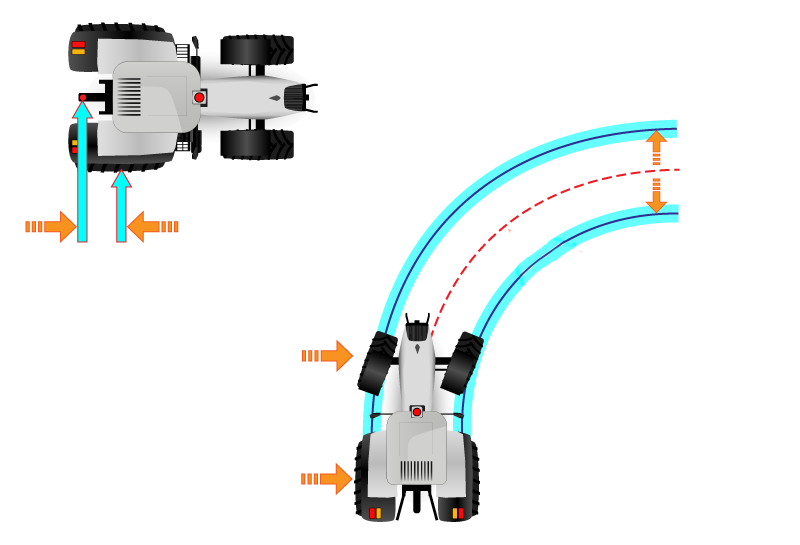
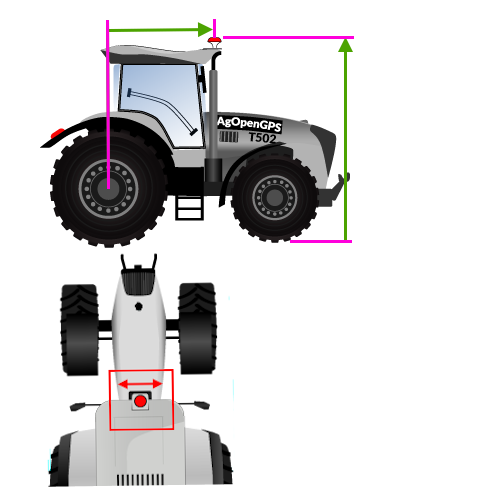

Vehículo
Tipo, geometría y antena GPS
¿Qué vehículo es?
Elegí el tipo de máquina que más se parece. Cambia cómo se dibuja el tractor en el mapa y cómo se interpreta la geometría.
Elegí tu vehículo
Para sumar uno nuevo: PNG vista superior (frente hacia arriba, fondo transparente) en AgroParallel\wwwroot\img\vehiculos\ con nombre tipo_marca_modelo.png — tipos: rigido, articulado, cosechadora, pulverizadora (ej: rigido_pauny_580.png; modelo opcional).
Cargando…
Geometría del tractor

El dibujo corresponde al tipo de vehículo elegido en la pestaña Tipo.
Distancia entre ejes — del centro del eje trasero al delantero.
Trocha — centro a centro de ruedas.
Eje delantero ↔ trasero
Centro a centro de ruedas
Cuánto giran las ruedas a tope
Bajo esto se apaga el piloto
Vista lateral
cm
Del eje trasero a la antena (+ hacia adelante, − hacia atrás)

cm
Desde el piso hasta la antena
Vista superior
cm
Distancia desde el centro del tractor (el lado se elige abajo)
La antena dual va montada del lado derecho.